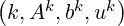
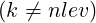
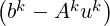
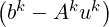
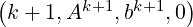
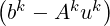
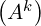

In order to describe the AMG preconditioners available in MLD2P4, we consider a linear system
|
| (2) |
where A = (aij) ∈ ℝn×n is a nonsingular sparse matrix; for ease of presentation we assume A has a symmetric sparsity pattern.
Let us consider as finest index space the set of row (column) indices of A, i.e., Ω = {1, 2,…,n}. Any algebraic multilevel preconditioners implemented in MLD2P4 generates a hierarchy of index spaces and a corresponding hierarchy of matrices,
by using the information contained in A, without assuming any knowledge of the geometry of the problem from which A originates. A vector space ℝnk is associated with Ωk, where n k is the size of Ωk. For all k < nlev, a restriction operator and a prolongation one are built, which connect two levels k and k + 1:
the matrix Ak+1 is computed by using the previous operators according to the Galerkin approach, i.e.,
In the current implementation of MLD2P4 we have Rk = (Pk)T A smoother with iteration matrix Mk is set up at each level k < nlev, and a solver is set up at the coarsest level, so that they are ready for application (for example, setting up a solver based on the LU factorization means computing and storing the L and U factors). The construction of the hierarchy of AMG components described so far corresponds to the so-called build phase of the preconditioner.
| procedure V-cycle |
| if  then |
| uk = uk + Mk |
| bk+1 = Rk+1 |
| uk+1 = V-cycle |
| uk = uk + Pk+1uk+1 |
| uk = uk + Mk |
| else |
| uk = -1bk |
| endif |
| return uk |
| end |
The components produced in the build phase may be combined in several ways to obtain different multilevel preconditioners; this is done in the application phase, i.e., in the computation of a vector of type w = B-1v, where B denotes the preconditioner, usually within an iteration of a Krylov solver [21]. An example of such a combination, known as V-cycle, is given in Figure 1. In this case, a single iteration of the same smoother is used before and after the the recursive call to the V-cycle (i.e., in the pre-smoothing and post-smoothing phases); however, different choices can be performed. Other cycles can be defined; in MLD2P4, we implemented the standard V-cycle and W-cycle [3], and a version of the K-cycle described in [20].